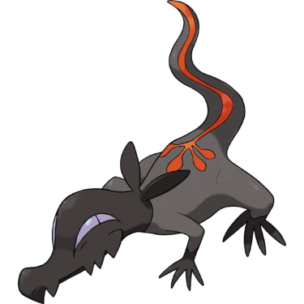
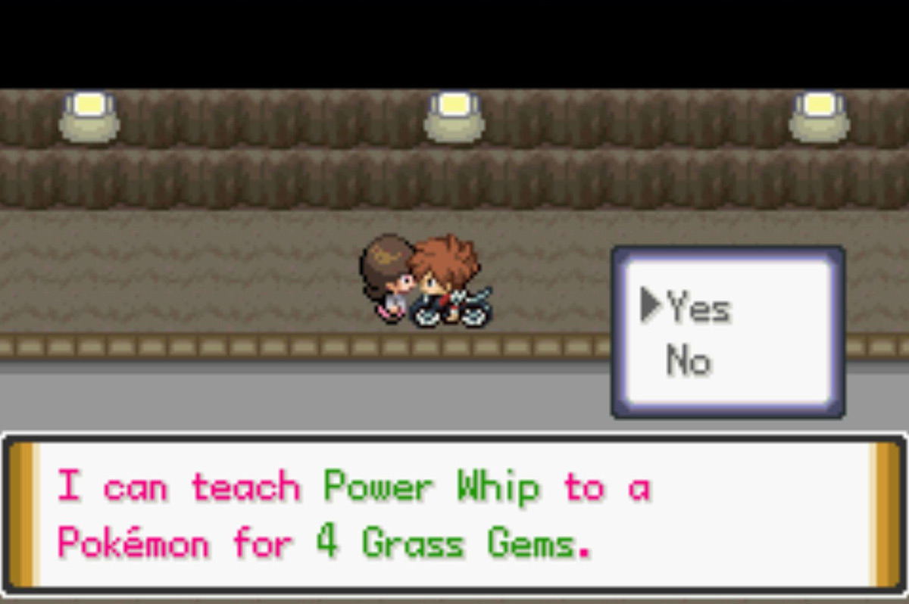
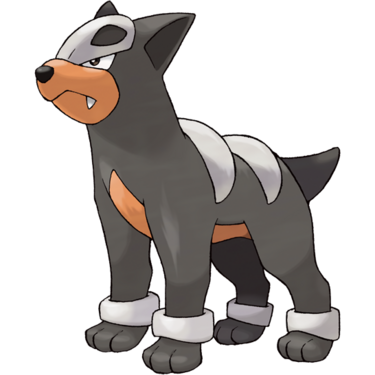

Quick Guide:
- Enter the KBT Expressway
- Defeat the Black Emboar
- Obtain the Motorcycle
- Challenge the Crater Town Gym
- Confront the Shadow Boss
- Obtain HM01 Cut
The KBT Expressway
Wild Pokémon
| Wild Pokémon | |
|---|---|
| Cave | |
|
Zubat Poison/Flying |
|
|
Woobat Psychic/Flying |
 |
|
Makuhita Fighting |
|
|
Aron Steel/Rock |
 |
|
Nosepass Rock |
 |
|
Geodude Rock/Ground |
 |
|
Noibat Flying/Dragon |
 |
Trainers
| Trainers | |
|---|---|
| Black Emboar Goon A | |
|
Tepig Fire (Lv.19) |
 |
|
Grimer Poison (Lv.20) |
 |
|
Koffing Poison (Lv.20) |
 |
| Black Emboar Goon B | |
|
Tepig Fire (Lv.19) |
|
|
Salandit Poison/Fire (Lv.20) |
 |
| Black Emboar Goon C | |
|
Numel Fire/Ground (Lv.19) |
 |
|
Koffing Poison (Lv.20) |
|
| Black Emboar Goon D | |
|
Ekans Poison (Lv.20) |
 |
|
Koffing Poison (Lv.21) |
|
|
Tepig Fire (Lv.19) |
|
|
Trubbish Poison (Lv.20) |
|
|
Numel Fire/Ground (Lv.20) |
|
The entrance to the KTB Expressway is to the north of Crater Town, and you’ll need to go in there to look for a man’s missing brother.
The Expressway is a massive tunnel system that connects most towns in Borrius, though only a few parts are open to you at the moment.
This section is crawling with biker thugs that call themselves the Black Emboar, and you’ll have to fight through a bunch of them one by one to proceed.
Along the way you’ll see a man in a juggler costume that calls himself a Gem Family member. These are move trainers that teach your Pokémon powerful moves in exchange for a number of specific type Gems.
More on that later, after the Black Emboar problem is taken care of.
Mining Minigame
Just a little further ahead you’ll see a worker who will offer to lend you his tools to mine for items. He’ll need P1000 every time.
The key here is to break as much of the rock using the hammer and pick tools before the wall collapses.
The crack in the top of the interface will grow with every hit, so be careful.
If you’re lucky, you can uncover Hard Stones, Heart Scales, Everstones, Revives, any of the evolution Stones, and a few more assorted goodies.
Once you’re finished with the mining minigame, continue north until you see an intersection.
Black Emboar Boss – James
Speak to the big man here and he’ll reveal himself as James, the boss of the Black Emboar.
He’ll immediately challenge you to a battle to test your worth.
| Black Emboar Boss James | |
|---|---|
 |
|
|
Koffing Poison (Lv.20) |
|
|
Salandit Poison/Fire (Lv.21) |
|
|
Alolan Grimer Poison/Dark (Lv.22) |
 |
|
Pignite Fire/Fighting (Lv.22) |
 |
When you beat him, he’ll be so impressed that he’ll name the gang after you.
When you ask him about your mission, he’ll tell you that he’s actually the brother the man is looking for!
You go back to Crater Town together to confront his brother, who was just worried he was getting himself into too much trouble.
James says that his gang is off to Antisis City to take up residence there, and has a parting gift for you.
You’ll get your very own Motorcycle, which you can assign to the Select button from the Cube menu.
Not only will it be much faster than the Running Shoes, but wild Pokémon encounters are reduced while riding it. Very handy.
Moving Forward
Now that the Black Emboar are gone, the KTB Expressway opens up as a bit of a shortcut for you to use. At the moment though, the only towns you can access through it are Dresco Town and Frozen Heights.
There are also four Gem Family members in the tunnel you can get to if you’d like to:
| Gem Family Move Shops | ||
|---|---|---|
| Move | Screenshot | Location |
|
Poison Cross Poison 2 Poison Gems |
North of the Crater Town Entrance | |
|
Grass Power Whip 4 Grass Gems |
 | Along the Dresco Town tunnel (east of the Boss James fork) |
|
Dark Crunch 3 Dark Gems |
Along the Blizzard City/Frozen Heights tunnel (north of the Boss James fork) | |
|
Ice Triple Axel 3 Ice Gems |
Along the Frozen Heights tunnel (north and east of the blocked Blizzard City exit) | |
With that out of the way, it’s time to head to Crater Gym to get your next badge.
Crater Gym – Vision Badge
The Crater Gym is in the northeast quadrant of Crater Town, in the lower ring.
The Crater Gym is focused on Dark-types, and it shows – the interior is completely pitch black.
The Guide inside tells us that defeating trainers here will increase your visibility, so that’s your first task.
Tip: Dark-type moves are super-effective against Psychic- and Ghost-type Pokémon, so avoid using those. However, Dark-type Pokemon are weak against Fighting-, Bug-, and Fairy-type moves.
One more thing – your Pokémon will be taking damage every turn by the Dark energy in this place, unless they’re Dark-type, Ghost-type, or have an ability such as Magic Guard, Unaware or Oblivious.
| Gym Trainers | |
|---|---|
| Youngster Dixon | |
|
Nuzleaf Grass/Dark (Lv.21) |
|
| Scientist Dilweed | |
|
Poochyena Dark (Lv.21) |
 |
| Medium Lyssa | |
|
Murkrow Dark/Flying (Lv.21) |
|
| Gentleman Clemonce | |
|
Houndour Dark/Fire (Lv.21) |
 |
From the entrance, follow the right corridor until you encounter some trainers. Youngster Dixon and Scientist Dilweed are on their own, but if you step in the middle between Medium Lyssa and Gentleman Clemonce, they’ll fight you together in a Double Battle.
If you don’t want that, talk to them separately.
Once those four trainers are defeated, your circle of visibility will be much larger than before.
Then go back to the Guide at the start of the gym and head into the passage behind him.
Crater Gym Sneaking Puzzle
Do you like stealth puzzles?
Well, like it or not, this section is one.
Follow the corridor left until you see a female trainer run past and then go back – when her back is turned, follow her. Then hide in an alcove to the south while she passes by.
The same goes for a boy trainer doing the same thing further down the path. If you’re caught at any point, you’ll be sent back to the beginning.
After you get past those two NPCs, there’s a bit of a checkpoint before you have to sneak past two more trainers.
None of these paths should be challenging if you study their movements.
Then there’s two more trainers after that, including a sneaky cameraman, but you will eventually make it to the Gym Leader’s room.
Crater Gym Leader – Vega
The Crater Gym Leader is a very edgy type of person, and you’ll have to beat him to get that Vision Badge.
No real tricks here, although the moves of his Pokémon will probably make yours flinch often.
| Gym Leader Vega | |
|---|---|
|
Liepard Dark (Lv.22) |
 |
|
Sneasel Dark/Ice (Lv.21) |
 |
|
Absol Dark (Lv.23) |
|
After You Win
If you manage to defeat him, Vega will give you the Vision Badge as well as TM46 Thief.
With Vega defeated, you will notice that the Shadow Grunts have moved away from the southern exit of Crater Town.
Unfortunately, it’s too good to be true – as soon as you try to leave town from that exit you’re ambushed by a bunch of Grunts and taken to Cinder Volcano.
Shadow Battles
The leader of the Shadow, a man named Zeph, is here – along with Ivory who was the one who captured Moltres.
Ivory challenges you to a battle straight away.
| Shadow Admin Ivory | |
|---|---|
|
Misdreavus Ghost (Lv.22) |
 |
|
Kadabra Psychic (Lv.21) |
 |
Ivory isn’t too tough if you’ve been training your Pokémon evenly.
After she’s been defeated, Zeph will declare that he will take care of you once and for all.
Zeph has only one Pokémon, and Ivory warns him against trying to beat you with it. However, he ignores her.
| Shadow Boss Zeph | |
|---|---|
|
Houndoom Dark/Fire (Lv.24) |
|
He’s shocked when you beat his Houndoom, but doesn’t have too much time to react.
An earthquake hits the volcano, and a Shadow Grunt reports that a massive monster has appeared from below.
The Shadow quickly leave, and you’re left on our own – but a strange Pokémon appears, and shoves us through a portal to safety.
You arrive in the southern KBT tunnel south of Crater Town, where you were trying to go in the first place!
Getting HM01 Cut
Apparently the way forward to Thundercap Mountain and Zapdos is blocked by a rockfall, and we need HM06 Rock Smash to clear it.
The Hiker knows someone who can give it to you, but they live in Blizzard City. The only way to get to Blizzard City from here is through the cave in the very center of Crater Town.
And that cave is blocked by a small tree…
But luckily for you, the Hiker gives you HM01 Cut!
Optional: Backtracking for Extra Items
Having Cut opens up a few areas in routes you’ve already been to as well. So if you’d like to backtrack for some extra goodies, here’s a list of where to go:
| Cut Backtracking Locations | |
|---|---|
| Route 5 | |
|
Raid Den (hidden grotto) |
|
|
Moon Stone (hidden) |
|
| Zygarde Cell | |
| TM09 Bullet Seed | |
| Route 4 East | |
| TM66 Payback | |
| Route 2 | |
| TM112 Round | |
Entering Valley Cave
Valley Cave is your next destination, and cutting the small tree at the bottom of the crater will get you there.